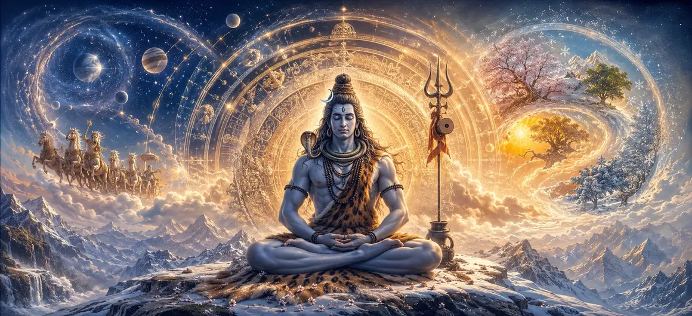

The Glory of Time
In Chapter 7 of the Vayaviya Samhita, Lord Vayu unfolds the majestic and awe-inspiring mystery of Time (Kala) and its absolute master, Mahakala—Lord Shiva.
While mortal existence is bound by the relentless ticking of temporal limits, cosmic time operates in grand, cyclical rhythms of creation, preservation, and dissolution, all orchestrated under the supreme will of Mahadeva.
This profound chapter examines how the universe is measured, sustained, and ultimately withdrawn into the timeless infinite.
Chapter 7 Comprehensive Highlights
Dominion of Mahakala
Shiva as the supreme ruler who devours and transcends time itself.
Cyclic Creation
Understanding the eternal wheel of universal manifestation.
Cosmic Rhythms
Exploring yugas, manvantaras, and expansive kalpas.
Transcending Fear
Overcoming mortal anxiety through realization of eternity.
Temporal Order
How cosmic law maintains balance across vast epochs.
Gateway to Trinity Lifespans
Setting the stage for examining cosmic durations in Chapter 8.
Core Topics in This Chapter
- 01The Metaphysical Nature of Kala and Mahakala→
- 02Lord Shiva as the Supreme Conqueror of Death→
- 03Measurements of Cosmic Time: From Nimesha to Kalpa→
- 04The Four Yugas and Universal Evolution→
- 05The Four Types of Pralaya (Dissolution)→
- 06Transcending Time into the Eternal Present→
- 07Time as the Agent of Karmic Unfolding→
- 08Shattering the Illusion of Mortal Time→
- 09Fearlessness Born of Devotion to Mahakala→
- 10Transition to the Lifespans of Cosmic Deities→
The Metaphysical Nature of Kala and Mahakala
Lord Vayu explains that ordinary time (Kala) is the binding force that measures change, aging, and decay in the phenomenal universe.
However, Mahakala is the transcendental substrate in which time itself is born, sustained, and dissolved.
While created beings are controlled by Kala, Mahakala controls Kala itself, rendering Him the ultimate refuge.
Lord Shiva as the Supreme Conqueror of Death
Shiva holds the epithet Mrityunjaya (Conqueror of Death) because He stands completely beyond temporal boundaries.
By worshipping Mahakala, devotees invoke grace that shatters the terror of mortality and aligns consciousness with immortality.
Death is merely a transition in the grand script written by the supreme Lord.
Measurements of Cosmic Time: From Nimesha to Kalpa
The discourse details the ancient Vedic and Puranic units of time, starting from the blink of an eye (Nimesha) to cosmic eras.
A Mahayuga comprises four distinct ages, while a Kalpa represents a full day of Brahma, encompassing thousands of divine cycles.
These vast numbers illustrate the incomprehensible scale of universal manifestation.
The Four Yugas and Universal Evolution
The chapter outlines the cyclical progression of Satya, Treta, Dvapara, and Kali Yugas.
Each age witnesses a gradual decline in spiritual purity and righteousness, followed by cosmic renewal through divine intervention.
Understanding this flow helps seekers remain balanced amidst changing societal conditions.
The Four Types of Pralaya (Dissolution)
Lord Vayu elucidates the four forms of dissolution: Naimittika (occasional), Prakritika (elemental), Nitya (constant), and Atyantika (absolute liberation).
Through these processes, the material universe rests periodically, returning to its unmanifest seed state within Shiva.
Transcending Time into the Eternal Present
True yogic realization breaks the psychological prison of past regret and future anxiety, anchoring the mind in the eternal Now.
In this state of deep absorption, time ceases to be a tyrant and becomes recognized as the play of divine consciousness.
Time as the Agent of Karmic Unfolding
Time acts as the impartial instrument through which past actions (Karma) yield their inevitable fruits across lifetimes.
Nothing escapes the precise accounting of Kala, ensuring cosmic justice and moral balance.
Shattering the Illusion of Mortal Time
The text reminds seekers that identification with the physical body creates the false sense of time running out.
Realizing the soul's infinite nature dissolves this illusion completely.
Fearlessness Born of Devotion to Mahakala
Devotees who surrender completely to Mahakala transcend the fear of death, knowing that their true home is eternal Shiva.
This devotion transforms life into an ecstatic celebration of divine grace.
Transition to the Lifespans of Cosmic Deities
Concluding this discourse on the glory of time, Lord Vayu prepares the sages for the next profound exploration.
Chapter 8 will examine the specific lifespans of Brahma, Vishnu, and Rudra within this cosmic framework.
Extended Key Teachings of Chapter 7
Mahakala Supremacy
Shiva transcends and governs all temporal existence.
Cyclic Evolution
Creation and dissolution occur in eternal rhythmic turns.
Vast Epochs
Understanding kalpas and yugas expands spiritual vision.
Fearlessness
Surrender to Mahakala conquers the fear of death.
Karmic Justice
Time ensures exact reaping of past actions.
Eternal Present
True realization anchors consciousness in the timeless infinite.
Expanded Spiritual Reflection
Time is often perceived as a relentless enemy that steals our youth and leads us toward death. Yet, when viewed through the lens of Shaiva philosophy, time is the divine breath of Mahakala. By resting our identity in the timeless spirit within, we transform fear into profound peace.
Living the Message of Chapter 7
Release anxiety about the future by trusting in the supreme cosmic order orchestrated by Mahadeva.
Use each passing moment consciously for spiritual growth rather than idle worldly pursuits.
Remember that while the body is subject to time, your true essence is eternal and indestructible.
Detailed Key Spiritual Concepts
The supreme reality transcending and governing time.
The vast measurement of cosmic cycles and eras.
The four distinct forms of universal dissolution.
Spiritual practice to conquer the fear of death.
Understanding temporal unfolding and cosmic order.
Anchoring consciousness in the eternal present.
Exhaustive Chapter Summary
Vayaviya Samhita Chapter 7 ('The Glory of Time') presents a magnificent exploration of Kala and Mahakala. By detailing cosmic measurements, yugas, dissolutions, and the supremacy of Lord Shiva over death, the text frees seekers from mortal terror. This profound chapter builds an essential foundation for understanding the grand lifespans of cosmic deities in Chapter 8.
Frequently Asked Questions
1. What is the primary theme of Vayaviya Samhita Chapter 7 ('The Glory of Time')?
The chapter explores the majestic dominion of Kala (Time) and Mahakala (Lord Shiva as the conqueror and master of time), detailing cosmic temporal cycles, creation, dissolution, and eternity.
2. How does Lord Shiva relate to Time according to this chapter?
Shiva is revered as Mahakala, the ultimate reality who instigates, sustains, and dissolves time itself, remaining untouched by temporal decay.
3. What are the cosmic cycles discussed in the discourse?
The discourse outlines various orders of cosmic time, including yugas, manvantaras, kalpas, and the grand rhythms of universal manifestation and withdrawal.
4. Why is understanding time considered important in Shaiva philosophy?
Comprehending time allows the seeker to transcend mortal anxiety, recognize the transient nature of worldly phenomena, and anchor consciousness in the timeless infinite.
5. How does spiritual practice help one overcome the fear of time?
Through intense contemplation and devotion to Mahakala, the practitioner realizes their true identity as immortal spirit, thereby conquering death and fear.
6. What is the next chapter for navigation after this chapter?
The next chapter for navigation is 'The Lifespans of the Trinity'.
“Kala devours all creation, yet Mahakala—the supreme Lord Shiva—devours Kala Himself, standing eternally triumphant as the embodiment of absolute freedom.”
Continue Through Vayaviya Samhita
Chapter 7 concludes. Continue to the next chapter, The Lifespans of the Trinity.